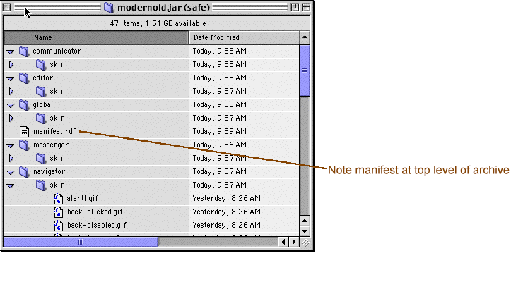

About Theme Formats
In this technical note:
Netscape 6 supports several different file formats for making new components--including themes--available for cross-platform installation. The manner in which a new component is installed depends, to some extent, on the structure of the component file, on the installation method, and sometimes on external scripts (e.g., javascript event handlers in web pages) that "trigger" the installation process. Themes, software updates, and new Netscape 6 components can all be installed using this cross-platform (or "XPInstall") technology.
In order to make your theme installable using Netscape 6's chrome install component (and available on Netscape 6's Theme Park), you must make sure that your theme archive conforms to a certain theme format. The structure, description or "contents" file for your theme, and the trigger code necessary to create an installation script for the theme are described in this technical note.
Note: The themes installed with preview releases of Netscape 6 do not conform to this specification. They have been modularized to allow the skinning of select components, and the archiving of such things as language packs alongside themes. Unless you plan to do your own retro-fitting, do not use the modern.jar or classic.jar themes for Netscape 6 as a basis for your own theme development. The theme developer's template described in the last section of this technical note is available for download here.
The Theme Archive Structure
The structure of your theme archive must be very explicit. Each of the components to which your theme applies must be a subdirectory in the theme archive, and under each of the subdirectories, there should appear a skin\ subdirectory in which the theme resources are actually located. The theme resources for the editor component of your theme, for example, should appear in the subdirectory structure like the following.
See the screenshot below for a more complete example of this theme structure.

The Theme Manifest
Another essential part of an installable theme is a manifest that describes the contents and structure of the theme. The manifest is a RDF file at the highest level of the theme archive that provides the necessary information about the theme to the chrome registry and names the Netscape 6 components to which that theme will apply. Though the Classic and Modern themes use RDF in a sligthly different way (see note above), new themes must include a manifest.rdf at the top.
In the following example, the theme here named "Modern" is described as skinning the aim*, communicator, editor, global, messenger, and navigator components.
Copy this code listing into a new manifest.rdf file and change the values in red to the manifest.rdf for your theme.
1. <?xml version="1.0"?> 2. <RDF:RDF xmlns:RDF="http://www.w3.org/1999/02/22-rdf-syntax-ns#" 3. xmlns:chrome="http://www.mozilla.org/rdf/chrome#"> 4. <!-- List all the skins being supplied by this theme --> 5. <RDF:Seq about="urn:mozilla:skin:root"> 6. <RDF:li resource="urn:mozilla:skin:modern/1.0" /> 7. </RDF:Seq> 8. <!-- Modern Information --> 9. <RDF:Description about="urn:mozilla:skin:modern/1.0" 10. chrome:displayName="Modern" 11. chrome:author="themes@mozilla.org" 12. chrome:name="themes@mozilla.org/modern/1.0"> 13. <chrome:packages> 14. <RDF:Seq about="urn:mozilla:skin:modern/1.0:packages"> 15. <--RDF:li resource="urn:mozilla:skin:modern/1.0:aim"/ --> 16. <RDF:li resource="urn:mozilla:skin:modern/1.0:communicator"/> 17. <RDF:li resource="urn:mozilla:skin:modern/1.0:editor"/> 18. <RDF:li resource="urn:mozilla:skin:modern/1.0:global"/> 19. <RDF:li resource="urn:mozilla:skin:modern/1.0:messenger"/> 20. <RDF:li resource="urn:mozilla:skin:modern/1.0:navigator"/> 21. </RDF:Seq> 22. </chrome:packages> 23. </RDF:Description> 24. </RDF:RDF> |
To use this manifest.rdf file in your own theme (note that the theme template included with this technical note also inludes a manifest you can adapt for your own use.), simply change the references from "themes@mozilla.org/modern" to your email address and the name of your theme, and change the displayName "Modern" to the full name of your theme. You should also change the author property from "themes@mozilla.org" to your own name. For more information about the naming of themes and the use of these properties in the manifest, see the following section, Theme Naming Conventions.
Theme Naming Conventions
The chrome:name property in the manifest.rdf file (see line 12 in the example above) must be unique if the theme is to be installed properly. By convention, the chrome:name has a value made up of:
- The author's email
- The name of the theme itself
- The version number of the theme
These values are delineated with slashes. For example, theme author with the email address "ionesco@netscape.net", having created a "pre-1.0" version of his monumental "Rhinoceros" theme for submission to the Netscape 6 Theme Park, might use the following chrome:name in the manifest:
chrome:name="ionesco@netscape.net/rhinoceros/0.8"
The resource name (lines 6 and 9 in the example manifest above) does not use this convention for identifying the contents of the theme archive. The resource name and the chrome name do not have to be the same. As long as the resource listed in line 6 and the name of the resource that leads off the description (about="urn:mozilla:skin:modern/1.0") agree, the RDF can be parsed correctly.
The Theme Developers' Template (modern_template.jar)
The theme template, which you can download and use by clicking here, is an installable version of Mozilla's Modern theme. All of the resources and cascading style sheet definitions in this theme can be edited and adapted for use in your own theme development. The theme template was itself adapted from the installed version of Mozilla's Modern theme.
Note about the AIM component: The theme template does not include any theme resources for AIM, and the manifest does not name "aim" as a skinnable component. Mozilla does not include an AOL Instant Messenger component like Netscape 6 does, so theme developed from this template will not apply to any part of the AIM component. To add support for AIM to your template-based theme, uncomment line 15 in the sample manifest.rdf above, include an aim/skin/ subdirectory structure in your archive, and make sure that your aim skin resources are located there.
To begin using the theme template, extract its contents into a temporary folder. All of the resources are contained within the various subdirectories, and referenced by the CSS files. For example, the Back button style for the navigator component is defined in the [extracted] file temp_dir/navigator/skin/navigator.css as:
#back-button { margin-left : 0px; list-style-image : url("chrome://navigator/skin/back.gif"); }
The CSS property list-style-image points to a GIF file that is loaded for the back button, in this case the image back.gif. You can change the theme by changing the image to which this CSS property points, or by editing the back.gif in an image editor. See Creating Netscape 6 Themes and Getting Started with Themes for more information about how to edit and create a theme.
Theme Installation
Once you have created a theme from the template (or made your theme to conform to the structure and manifest described here), you can take advantage of the Netscape 6 cross-platform install technology with a very simple web page script.
The following JavaScript code, placed in an onclick event handler on a web page, will install the theme template from the docs are of the www.mozilla.org:
The url in the installChrome function can be a file:// url, a relative url (e.g., 'modern_template.jar' if the template is in the same directory as the triggering web page), or a regular http:// url.